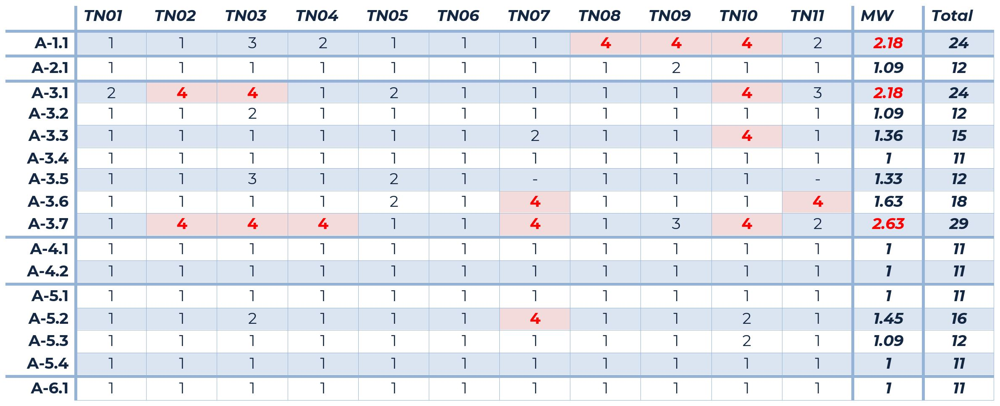
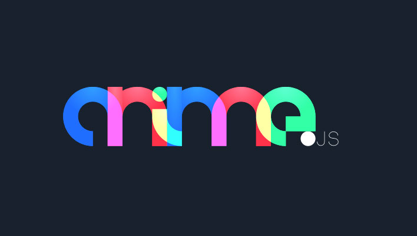
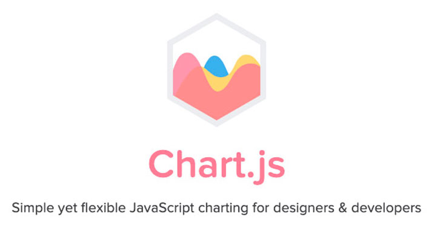

Inwiefern beeinflussen Storytelling-Komponenten auf Webseiten, die Wahrnehmung des Nutzers?
Von Frank Zinsli
Thesis
Thesis
"Inwiefern beeinflussen Storytelling-Komponenten auf Webseiten, die Wahrnehmung des Nutzers, auf den Inhalt?"
Thesis
Wie bin ich vorgegangen?
Thesis
Wie bin ich vorgegangen?
Was ist der aktuelle Stand?
Thesis
Wie bin ich vorgegangen?
Was ist der aktuelle Stand?
Vorgehen
- Einleitung geschrieben (aufbauend auf das Proposal)
- Theorieteil geschrieben
- Methodenteil
- Experteninterviews
- Online-Umfrage
- Usability-Test inkl. Interview
Experteninterviews


| Experte | Fachgebiet |
|---|---|
| Ancilla Schmidhauser | Business Storytelling |
| Felix Murbach | Marketing generell |
| Stefan Huber | Storytelling |
Online-Umfrage unter MMP-Studenten
Wie wird Storytelling auf Webseiten umgesetzt? (%)
Wie haben die Fotos auf dich gewirkt? (%)
schlecht mittel gut sehr gutWelche Komponenten würdest du einsetzen? (%)
Usability-Test inkl. Interview
Usability-Test inkl. Interview
Thesis
Wie bin ich vorgegangen?
Was ist der aktuelle Stand?
Thesis
Wie bin ich vorgegangen?
Was ist der aktuelle Stand?
Aktuelle Stand
- Erledigt
- Einleitung
- Theorieteil
- Methodenteil
- Offen
- Auswertung ausschreiben (Empirieteil)
- Fehler korrigieren
- Leitfaden entwickeln
Lehrprojekt
Welche Produkte entstehen?
Wie gehe ich vor?
Was ist der aktuelle Stand?
Lehrprojekt
Welche Produkte entstehen?
Wie gehe ich vor?
Was ist der aktuelle Stand?
Produkte
- Storytelling-Javascript-Bibliothek für MMP-Studenten
- Prozessdokumentation
- Testkonzept
- Landingpage für die Javascript-Bibliothek
- Demoseite
Produkte
- Storytelling-Javascript-Bibliothek für MMP-Studenten
- Prozessdokumentation
- Testkonzept
- Landingpage für die Javascript-Bibliothek
- Demoseite
Javascript-Bibliothek
- Sammlung von Klassen, Komponenten oder Funktionen
- JavaScript-Datei die eingebunden werden kann
- Hilfsfunktionen für die Programmierung
Einige Beispiele von JavaScript-Bibliotheken

|
|
|  |  |
Lehrprojekt
Welche Produkte entstehen?
Wie gehe ich vor?
Was ist der aktuelle Stand?
Lehrprojekt
Welche Produkte entstehen?
Wie gehe ich vor?
Was ist der aktuelle Stand?
Vorgehen
- Was muss die Javascript-Bibliothek können?
- Können die Komponenten angepasst werden?
- Wie wird die Javascript-Bibliothek umgesetzt?
Hilfsmittel
TwitterBootstrap jQuery less GruntJS JSHint JSLint markdown sass vue livereload web-build jQuery UI mustache webpack postcss npm jQuery Mobile node.js scssWebpack
- Code Splitting
- Vereinfachtes Caching
- Ziel-Typ: UMD => Universal Module Definition
Konfiguration
const path = require("path");
const common = require("./webpack.common");
const {merge} = require("webpack-merge");
const MiniCssExtractPlugin = require("mini-css-extract-plugin");
module.exports = merge(common, {
mode: "production",
output: {
filename: "script/[name].min.js",
path: path.resolve(__dirname, "dist"),
assetModuleFilename: 'assets/[name]-[hash][ext]',
library: "$story",
Konfiguration
Lehrprojekt
Welche Produkte entstehen?
Wie gehe ich vor?
Was ist der aktuelle Stand?
Lehrprojekt
Welche Produkte entstehen?
Wie gehe ich vor?
Was ist der aktuelle Stand?
Der aktuelle Stand
- Javascript Bibliothek
- Programmierumgebung steht
- Erster Komponent wurde programmiert
Demoseite der Javascript Bibliothek
Abstimmung
https://www.menti.com/shs7i1qkaw